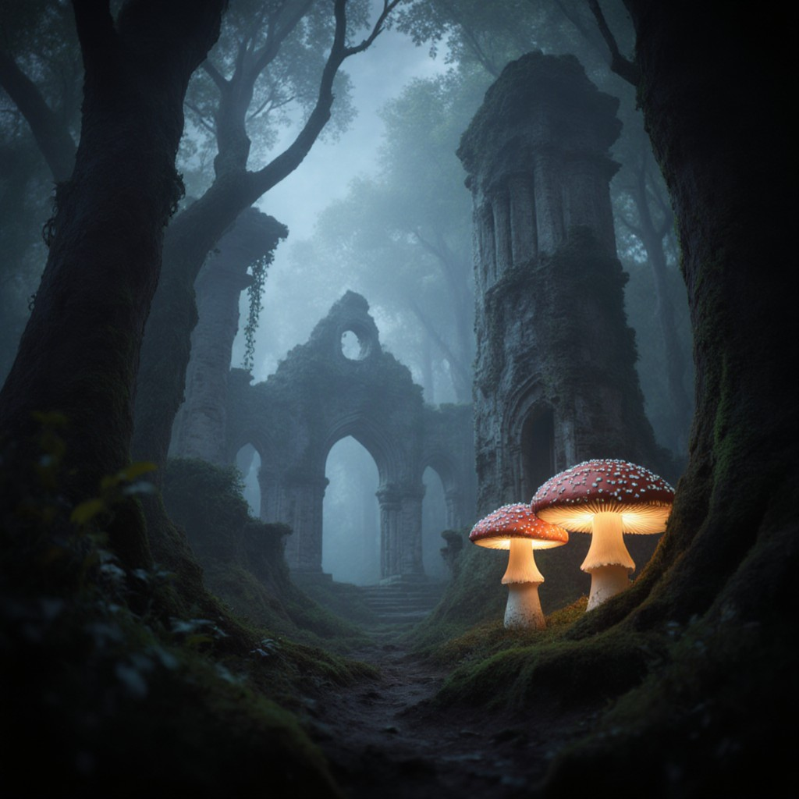
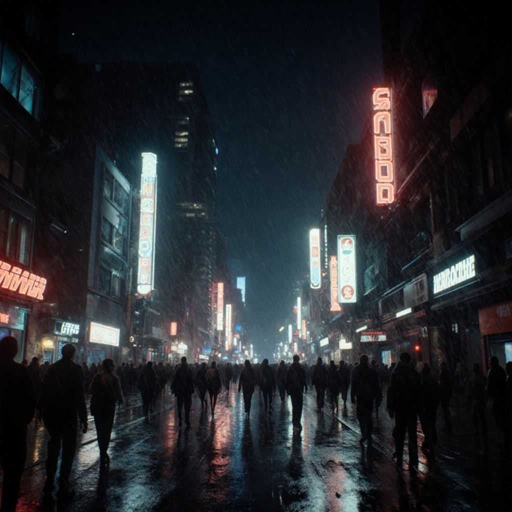
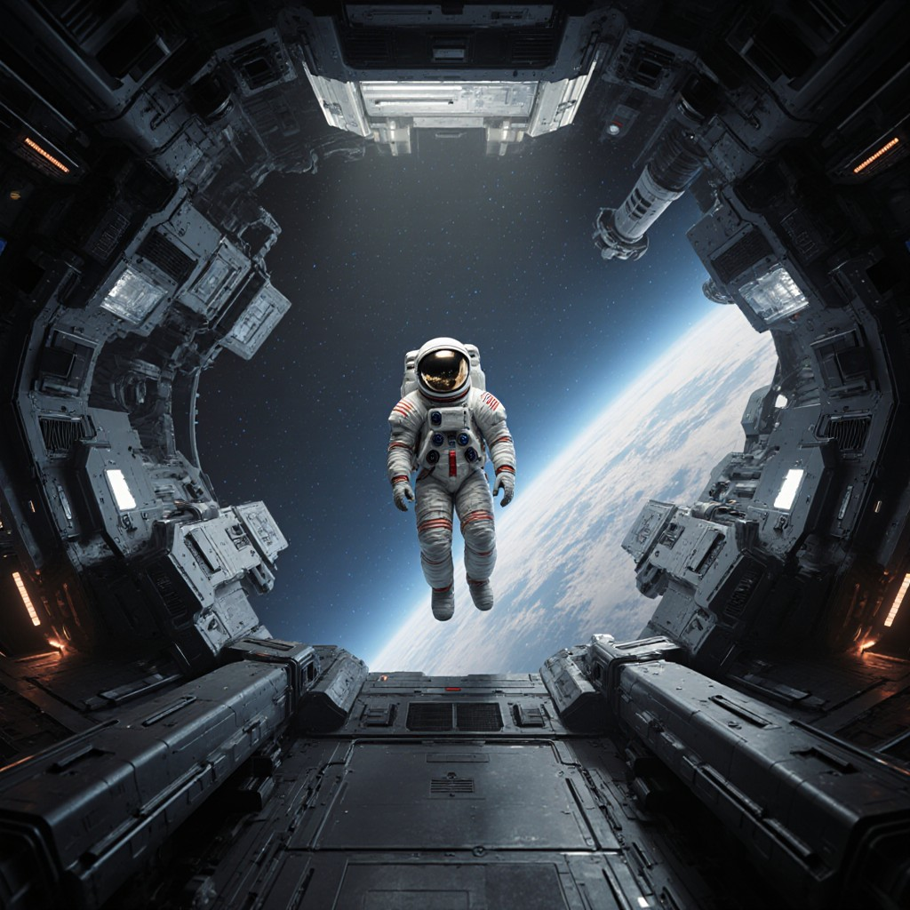

🔍 Детали эксперимента
Дата проведения
15 декабря 2024
Оборудование
P102-100 10GB + Xeon E5 2650v4
Софт
AUTOMATIC1111 WebUI
Модель
Stable Diffusion 1.5
⚙️ Настройки запуска
Команда запуска WebUI:
python launch.py --precision full --no-half \
--medvram --opt-split-attention \
--disable-nan-check \
--listen --port 7860Параметры генерации:
- Разрешение: 512x512 пикселей
- Количество шагов: 20-25
- CFG Scale: 7-9
- Сэмплер: Euler a, DPM++ 2M Karras
- Без негативных промптов
🖼️ Результаты генерации
Промпт #1: Фэнтези-пейзаж
Промпт: "magical forest with glowing mushrooms, ancient ruins, misty atmosphere, fantasy art, detailed, epic composition, 4k"
Параметры: Steps: 20, Sampler: Euler a, CFG: 7.5

Промпт #2: Киберпанк-город
Промпт: "cyberpunk city street at night, neon lights, rain, futuristic buildings, crowded, cinematic lighting, Blade Runner style"
Параметры: Steps: 25, Sampler: DPM++ 2M Karras, CFG: 8

Промпт #3: Портрет в стиле аниме
Промпт: "anime girl with blue hair, school uniform, cherry blossoms in background, detailed eyes, masterpiece, best quality, anime art style"
Параметры: Steps: 22, Sampler: Euler a, CFG: 7
Промпт #4: Научная фантастика
Промпт: "futuristic space station interior, advanced technology, clean design, astronauts, zero gravity, sci-fi, realistic, detailed"
Параметры: Steps: 25, Sampler: DPM++ 2M Karras, CFG: 8.5

📊 Анализ производительности
Среднее время генерации
12-18 секунд
Использование памяти GPU
8.2-8.8 GB из 10 GB
Загрузка процессора
15-25% во время генерации
Температура GPU
68-74°C под нагрузкой

Системный мониторинг во время генерации
💡 Выводы и наблюдения
✅ Что работает хорошо:
- P102-100 отлично справляется с Stable Diffusion 1.5
- 10GB памяти достаточно для работы с базовыми моделями
- Стабильная работа без сбоев
- Приемлемая скорость генерации
⚠️ Сложности и решения:
- Требуется флаг --no-half для совместимости
- --medvram обязателен для оптимизации памяти
- Долгая инициализация (2-3 минуты)
- Ограниченная поддержка некоторых оптимизаций